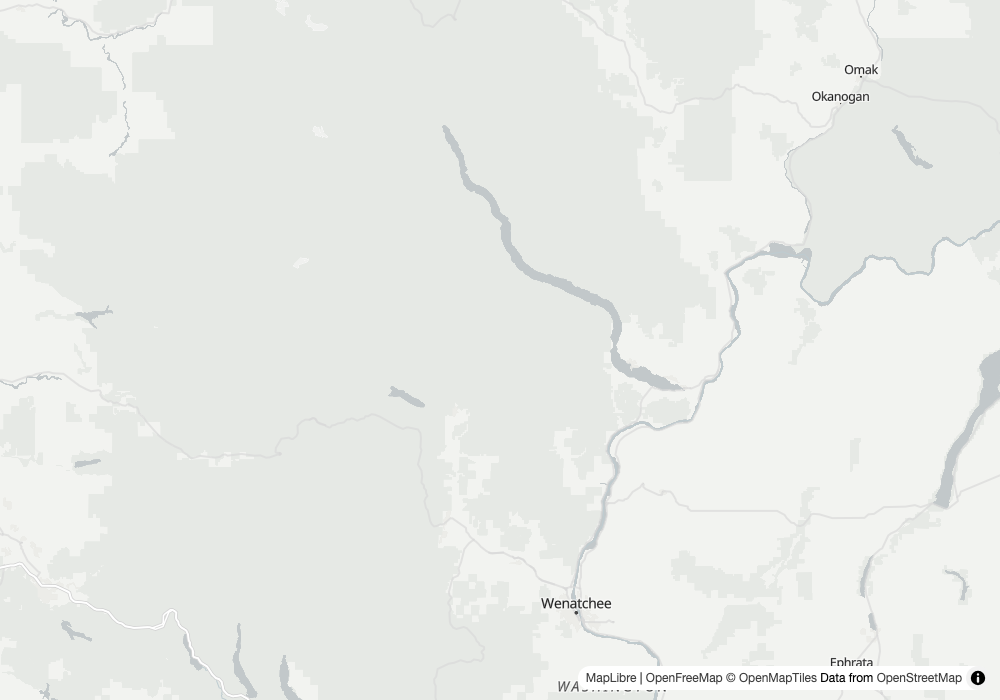

Round 1 · Forecasts and the new Zarr stores
1
zarr forecast
field analyst
Input
What is the temperature in Laredo, Texas tomorrow, from the HRRR forecast?
Our read
The search put both forecast stores in front of the question, and the one that is deprecated declined to answer rather than answering from a copy that is going away. HRRR is the forecast store for Laredo (CONUS, 3 km). For the box around the city at 2026-10-26 18:00 UTC it read a mean of 300.3059223090278 K across 225 cells, min 299.53564453125, max 301.09814453125, std 0.36198036404011924. The answer is in kelvin, as the store holds it. The one store here with a tile template is ERA5, and it is history (2m_temperature, ends 2023-01-10), so it can draw a map of a past day, not tomorrow.show the data
geocode("Laredo, Texas")
source: nominatim name: Laredo, Webb County, Texas, United States
lat/lon: 27.5079211, -99.5069834
bbox: [-99.7503109, 27.36649, -99.3310257, 27.7444122]
search_datasets("temperature forecast", place="Laredo, Texas") 3 hits
zarr noaa-gfs-forecast NOAA GFS forecast (dynamical.org)
note: curated zarr store: place and gsd filters not applied, see its coverage
zarr noaa-hrrr-forecast NOAA HRRR forecast, 2 m temperature (University of Utah)
summary: CONUS only, 3 km Lambert conformal grid. Variables: TMP
planetary-computer met-office-global-deterministic-near-surface gsd: null
compute_statistics(zarr, noaa-hrrr-forecast, TMP, bbox=Laredo, sel={"valid_time": "2026-10-26T18:00:00"})
TMP: min 299.53564453125 max 301.09814453125 mean 300.3059223090278
median 300.22314453125 std 0.36198036404011924 count 225
dataset: NOAA HRRR forecast, 2 m temperature (University of Utah): TMP (air temperature 2 m above ground), K
units: K
sel: {"time": "2026-10-26 18:00:00"}
caveats: []
compute_statistics(zarr, noaa-gfs-forecast, ...) is refused by design: stats False
stats_note: the data.dynamical.org plain Zarr copy is deprecated (sunset header 2026-10-01) and its last run is 2026-10-25T06Z; the supported copy is Icechunk, the upgrade path
ZARR_STORES stats / tiles
noaa-gfs-forecast False / False
noaa-hrrr-forecast True / False tiles_note: titiler.xyz opens the group but fails on its projected x/y coordinates, which are not stored in the group
nasa-mur-sst False / False
weatherbench2-era5 True / True
tile_url_template(zarr, weatherbench2-era5, 2m_temperature, sel={"valid_time": "2023-01-10T12:00"})
https://titiler.xyz/zarr/tiles/WebMercatorQuad/{z}/{x}/{y}.png?url=https%3A%2F%2Fstorage.googleapis.com%2Fweatherbench2%2Fdatasets%2Fera5%2F1959-2023_01_10-6h-240x121_equiangular_with_poles_conservative.zarr&variable=2m_temperature&sel=time%3Dnearest%3A%3A2023-01-10T12%3A00&rescale=220%2C320&colormap_name=inferno
Learning → The answer comes back in kelvin. A person asking for tomorrow's temperature wants degrees, and the tool does not convert; the units field says K and the conversion is left to the reader. Also: the stats
sel echoes the key as time, not the valid_time that was passed, and the place filter is not applied to curated zarr stores (the note says so), so a place outside CONUS would still list HRRR until the stats call refuses it (the refusal is in the code's coverage check, not in this run).geocode · search_datasets finds Zarr stores · GFS stats off by design · HRRR zarr statistics · ERA5 tile template
Round 2 · Finding what covers a place, and when the next look comes
2
discovery filter
humanitarian planner
Input
Which collections cover Efate, Vanuatu, at 10 m or finer?
Our read
The literal question, "optical imagery", returned nothing and said so: the search matches words, and no collection carries that phrase. That is an honest empty, not a statement that nothing exists. Searching "sentinel" with the 10 m cap gives the answer: four Earth Search Sentinel-2 collections and the Planetary Computer one, each declaring gsd 10.0. Searching "imagery" finds a finer option the sentinel query did not surface, the Planet NICFI basemaps at gsd 4.77. Collections that declare no gsd are kept and labelled "resolution unknown (not necessarily coarse)" instead of silently dropped, so Sentinel-1 radar and land-cover products ride along in the list.show the data
geocode("Efate")
source: gazet name: Efate (island)
bbox: [168.158203125, -17.80722656249992, 168.58485149451323, -17.54218750000001]
search_datasets("optical imagery", place="Efate", max_gsd=10) 1 entry
note: nothing matched 'optical imagery' in 4 catalog(s): earth-search, veda, planetary-computer, zarr. Absence here does not mean the data does not exist, only that these catalogs do not carry it under those words
search_datasets("sentinel", place="Efate", max_gsd=10) 20 hits (first nine shown, in order)
earth-search sentinel-2-pre-c1-l2a gsd 10.0 covers_aoi True
earth-search sentinel-2-l2a gsd 10.0 covers_aoi True
earth-search sentinel-2-l1c gsd 10.0 covers_aoi True
earth-search sentinel-2-c1-l2a gsd 10.0 covers_aoi True
planetary-computer sentinel-2-l2a gsd 10.0 covers_aoi True
earth-search sentinel-1-grd gsd None note: no gsd declared, resolution unknown (not necessarily coarse)
planetary-computer esa-worldcover gsd None note: no gsd declared, resolution unknown (not necessarily coarse)
planetary-computer io-lulc gsd None note: no gsd declared, resolution unknown (not necessarily coarse)
planetary-computer io-lulc-9-class gsd None note: no gsd declared, resolution unknown (not necessarily coarse)
search_datasets("imagery", place="Efate", max_gsd=10) 17 hits (first three shown)
planetary-computer planet-nicfi-analytic gsd 4.77 covers_aoi True
planetary-computer planet-nicfi-visual gsd 4.77 covers_aoi True
planetary-computer sentinel-2-l2a gsd 10.0 covers_aoi True
Learning → The first phrasing found nothing. A user would type "optical imagery" and get an empty list, and the note is the only hint that different words would work. The tool matches words and not meaning, so the useful answer needed a second and third query. Worth building: a suggestion of nearby terms when the result is empty.
gazet geocode · max_gsd filter · gsd printed per hit · honest empty note · unknown-gsd labelled, not dropped
3
next_pass
field team lead
Input
When is the next open-data satellite pass over Efate?
Our read
Five open-data passes in three days. The first optical one is SENTINEL-3B at 2026-10-25 22:48 UTC. The first Sentinel-2 pass, the 10 m imager from the last question, is SENTINEL-2C at 2026-10-26 23:01 UTC, and the first radar one is SENTINEL-1A at 2026-10-28 07:00 UTC, which sees through cloud day or night. A pass is a possible capture, not an acquisition plan: the result is swath geometry from live orbit data, cloud is its own gamble, and the imagery lands in the catalogs hours to a day after. For the richer view the result links EO Predictor (https://developmentseed.org/eo-predictor).show the data
next_pass(lat=-17.674707031249966, lon=168.37152730975663, days=3)
constellations_source: developmentseed/eo-predictor skipped: []
note: swath geometry from live TLEs, not the acquisition plan — a pass is a possible capture, and imagery reaches public catalogs hours to a day later. Commercial sensors only image if tasked. Richer view: https://developmentseed.org/eo-predictor
eo_predictor_url: https://developmentseed.org/eo-predictor
constellation satellite time_utc track_distance_km kind access
sentinel-3 SENTINEL-3B 2026-10-25 22:48 321.1 optical open
sentinel-3 SENTINEL-3B 2026-10-26 22:22 371.5 optical open
sentinel-2 SENTINEL-2C 2026-10-26 23:01 127.7 optical open
sentinel-3 SENTINEL-3A 2026-10-27 22:34 104.8 optical open
sentinel-1 SENTINEL-1A 2026-10-28 07:00 82.1 radar (day or night, sees through cloud) open
Learning → Nothing broke, but the list is thin for the question. Within the three days the default open-data set returned no Landsat pass, and the output does not give a resolution for the Sentinel-3 rows, so the Sentinel-2 row is the only one that continues the 10 m question from the last case. The result does not say how wide each swath is, so track_distance_km cannot be turned into "will it cover the island" by the reader.
next_pass default open-data sensors · optical vs radar · possible capture, not a plan · EO Predictor link
Round 3 · Working from an archive, and the brief
4
archive
offline analyst
Input
Cache a month of Sentinel-2 over Chelan County, then search it with no network.
Our read
Sixty-four Sentinel-2 scenes for the county were written to one parquet file. The proof of the offline claim is the control: with the same dead proxy a live call fails with Connection refused, and the archive search with a bbox returned five scenes. The archive search ran with no network. It carries its own honesty: the result says it is a snapshot as of 2026-10-25, that newer scenes may exist, and that analysis still goes through the live catalog. The recommendation is the same coverage-versus-cloud trade as before: S2C_10UFU_20261023_0_L2A is 8.8687% cloud and covers 49.7%, the clearest scene covers 16.5%, and none of the five returned covers the county alone.show the data
write_archive("earth-search", ["sentinel-2-l2a"], place="Chelan County", datetime_range="2026-09-25T00:00:00Z/2026-10-25T23:59:59Z",
out_path=".../demo/archives/chelan-s2-2026-10.parquet")
path: /Users/Danny/Source/groundstation-stop5/demo/archives/chelan-s2-2026-10.parquet
count: 64
datetime_range: ["2026-09-25T19:01:07.796000Z", "2026-10-23T19:11:22.560000Z"]
written: 2026-10-25
HTTPS_PROXY=http://127.0.0.1:9 HTTP_PROXY=http://127.0.0.1:9 (nothing listens on port 9)
control, live call under the dead proxy:
search_imagery("earth-search", ["sentinel-2-l2a"], place="Chelan County", limit=1)
httpx.ConnectError: [Errno 61] Connection refused
search_imagery(, ["sentinel-2-l2a"], place="Chelan County", max_cloud_cover=20, limit=5)
httpx.ConnectError: [Errno 61] Connection refused (raised in geocode, tools.py _nominatim)
search_imagery(, ["sentinel-2-l2a"], bbox=[-121.181, 47.261, -119.86, 48.551], max_cloud_cover=20, limit=5) same dead proxy
count: 5
archive.note: a snapshot of the catalog as of the written date, not the live catalog: newer scenes may exist. Analysis of these items (preview_item, compute_statistics, render_map) goes through the live catalog: call them with catalog 'earth-search' and the item id.
recommended: S2C_10UFU_20261023_0_L2A cloud_cover 8.8687 covers_aoi_pct 49.7
reason: "8.9% cloud but covers 49.7% of the area; the clearest scene (0.0% cloud) covers 16.5%. No single scene covers this area and no same-day set does either within these 5 results; raise limit or relax max_cloud_cover to find one"
S2C_10TGT_20261023_0_L2A 2026-10-23T19:11:18.532Z cloud 3.72872 covers 17.1
S2C_10UFU_20261023_0_L2A 2026-10-23T19:11:08.025Z cloud 8.8687 covers 49.7
S2C_10UGU_20261023_0_L2A 2026-10-23T19:11:04.376Z cloud 0.218639 covers 23.9
S2B_10UFU_20261021_0_L2A 2026-10-21T19:21:04.682Z cloud 0.000205 covers 16.5
S2C_10TFT_20261020_0_L2A 2026-10-20T19:01:26.910Z cloud 0.002594 covers 15.0
Learning → "Offline" held only after the place name was swapped for a bbox. With
place="Chelan County" the archive search still geocodes first, and the geocoder is a live call: it failed with Connection refused under the dead proxy. An archive search is offline only when the caller already has the bbox. Worth fixing: cache the archive's own extent so a place name can resolve against it. Also, the archive's own note sends analysis back to the live catalog, so a plane with no network can find a scene but not read it.write_archive via rustac · archive search with dead proxy · live control fails · snapshot note
5
conditions brief
emergency desk
Input
Brief me on Chelan County, including smoke.
Our read
The brief and the smoke frame are two separate calls in this tree. conditions_brief returned the dryness, wind, events, latest look and next passes, and no smoke and no artifact. The smoke frame comes from smoke_forecast: 0.5 µg/m³ now and 0.1 µg/m³ for 2026-10-26T18:00Z, on a scale where under 5 is clear. Smoke is not a concern at this moment and it is model guidance, not a measurement: NOAA HRRR, and the tool says its plume edges can be off by hours and miles. The map shows the forecast frame as a layer.
live artifact ↗show the data
conditions_brief(place="Chelan County") keys returned: dryness, wind, events, latest_look, next_looks, signals, summary, note
summary: "No rain >=1mm in the last 14 days. Peak wind today 17 km/h from the SE. 2 active wildfires within ~150 km."
latest_look: S2C_10TGT_20261023_0_L2A 2026-10-23 cloud 3.72872 covers_aoi_pct 17.1
next_looks: sentinel-3 SENTINEL-3B 2026-10-25 19:07 | sentinel-2 SENTINEL-2A 2026-10-25 19:11 | sentinel-1 SENTINEL-1A 2026-10-26 14:34
dryness: {"total_precipitation": 0.8, "days_since_last_rain": null, "days_back": 14}
smoke: no key in the result. artifact: none written by this function.
smoke_forecast(47.90594482421875, -120.52030944824219, hours_ahead=24)
run: 2026-10-25T12:00Z forecast_hour: 30 valid_time: 2026-10-26T18:00Z now_valid_time: 2026-10-25T18:00Z
now_ugm3: 0.5 forecast_ugm3: 0.1 units: µg/m³ near-surface smoke mass density
caveat: "this is model guidance from NOAA HRRR, not a measurement; a smoke plume's timing and edges can be off by hours and miles"
caveat: "approximate reading scale in µg/m³, not the AQI: under 5 clear, 5 to 35 light, 35 to 150 moderate, above 150 heavy"
render_map("Chelan County: smoke forecast frame", bbox, [raster: HRRR smoke 2026-10-26T18:00Z])
map_path: /Users/Danny/Source/groundstation-stop5/demo/chelan-smoke-ft9.html layers: ["HRRR smoke 2026-10-26T18:00Z"]
Learning → The brief did not carry the smoke frame, and it wrote no html. The smoke frame and the shareable page live in briefing/brief.py (which calls an LLM and the tiler), not in conditions_brief, so a plain call to the function cannot reproduce the page the doc describes. I ran the two pieces the function-level API offers and drew the map with render_map. Also noted: the dryness block reads days_since_last_rain null beside a signal saying no rain over 1 mm in 14 days, correct but easy to misread.
conditions_brief fields · smoke_forecast honesty caveats · map of the forecast frame
Reproduce
git clone https://github.com/dannybauman/groundstation && cd groundstation
git checkout stop-5/geoparquet-archives # until #48 to #51 merge, then main
bash scripts/doctor.sh # walks the setup chain, prints the fix
uv run evals/unit_checks.py # offline checks
uv run scripts/field_test.py docs/field-test-2026-10-25.cases.json # rebuild this page